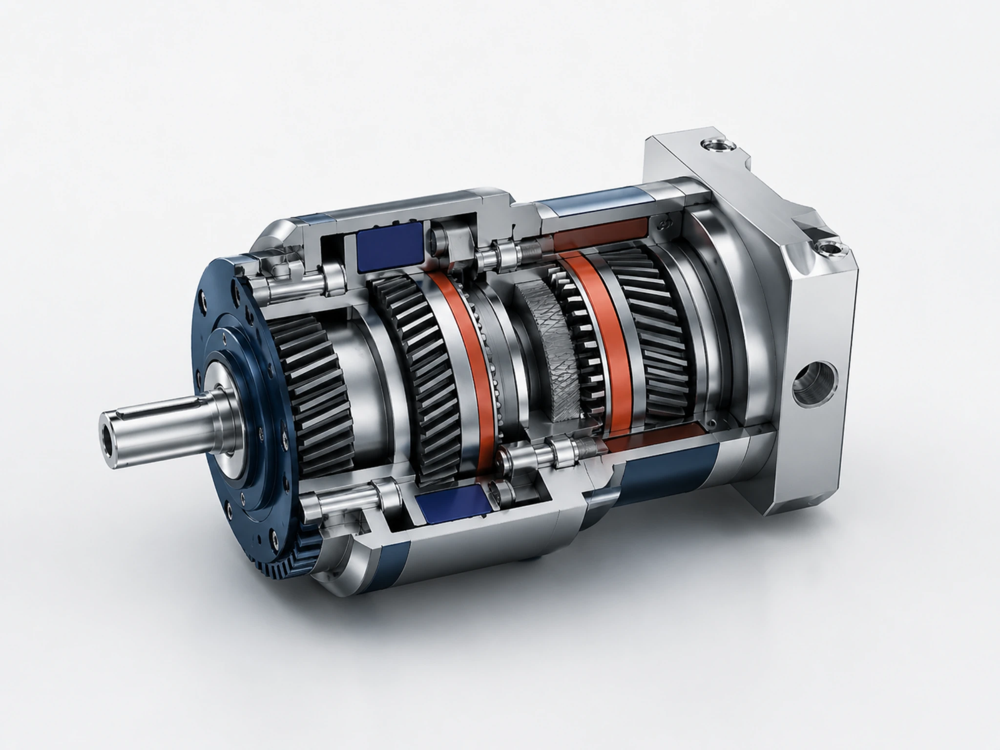

Non-contact Magnetic Drive Technology
비접촉 구동 기술로
정밀 제조의 한계를
낮춥니다
아이엠에르텍은 마그네틱 감속기와 PC-CNC 기술을 기반으로 저마모·저소음·정밀 제어가 필요한 산업 현장에 맞춤형 솔루션을 제공합니다.
비접촉 토크 전달소음·마모 저감스마트 제조 연계

아이엠에르텍 소개
방문자가 가장 먼저 궁금해하는 것은 “어떤 기술을 어디에 적용할 수 있는가”입니다. 아이엠에르텍은 연구 기반 기술을 현장 적용 가능한 솔루션으로 연결합니다.
한국전기연구원
기술출자 기업
연구성과를 기반으로 설립된 기술 혁신 기업
R&D 기반
기술개발
산업 적용을 목표로 한 구동·제어 기술 개발
국제표준(ISO)
연구 참여
글로벌 경쟁력 강화를 위한 표준화 활동
고객이 기대할 수 있는 가치
기술 설명보다 중요한 것은 고객 현장에서 어떤 문제가 줄어드는지입니다.
소음·진동·마모 이슈 저감
비접촉 토크 전달 구조로 기존 기계식 감속기의 부담 요소를 줄이는 방향을 제안합니다.
제어 시스템 확장성
PC-CNC 기반 제어 기술을 통해 장비 연동, 데이터 활용, 스마트 제조 확장성을 고려합니다.
적용 검토 중심 상담
단순 제품 소개보다 적용 장비, 운전 조건, 협력 범위를 기준으로 검토합니다.

적용 가능성을 먼저 검토해 보세요
장비 조건, 구동 방식, 협력 범위를 알려주시면 기술 적용 방향을 함께 검토합니다.